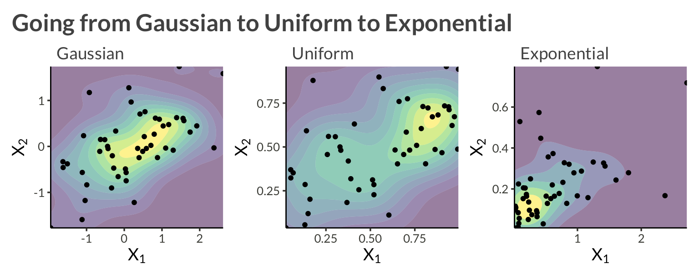
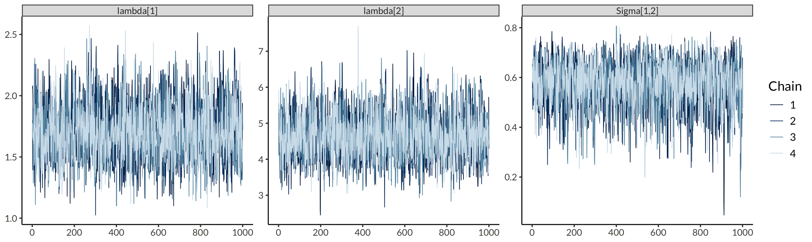
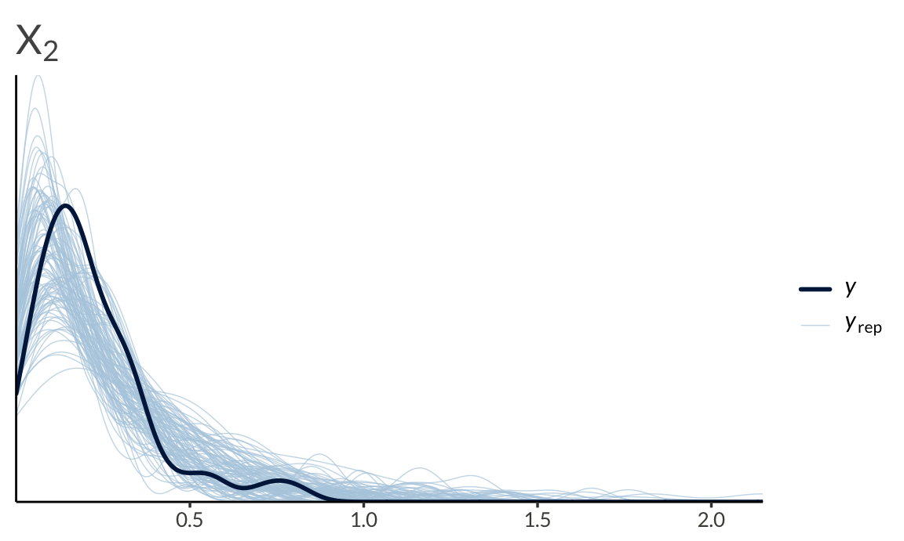

Code
library(tidyverse)
library(cmdstanr)
library(bayesplot)
library(patchwork)
library(gt)
theme_set(bggjphd::theme_bggj())This post is a continuation of last week’s blog post that introduces Copulas in Stan. This post will introduce the bivariate Gaussian copula, some of its positives and negatives, and how to code it up in Stan with an example.
Other posts in this series:
I don’t consider myself an expert in copulas. I just thought I might write up the things that I know so that it will hopefully help someone, or be corrected by someone who knows more. As Liam Neeson would say if he were a PhD student:

Modeling with the Gaussian copula can be summarised in a few steps:
More formally, the multivariate CDF of \(\mathbf X\) is written
\[ H(\mathbf X) = \Phi_\Sigma\left( \Phi^{-1}(F_1(X_1 \vert \theta_1)), \dots, \Phi^{-1}(F_D(X_D \vert \theta_D)) \vert \Sigma \right) \]
where:
Writing out the multivariate density, we get
\[ \begin{aligned} h(\mathbf X) &= c\left(F_1(X_1 \vert \theta_1), \dots, F_D(X_D \vert \theta_D)\right) \prod_{i=1}^D f_i(X_i \vert \theta_i)\\ &=\frac{f_\Sigma(z_1, \dots, z_D \vert \Sigma)}{\phi(z_1, \dots, z_D)} \prod_{i=1}^D f_i(X_i \vert \theta_i) \\ z_i &= \Phi^{-1}(u_i) \\ u_i &= F_i(X_i \vert \theta_i) \end{aligned} \]
where:
We start with the joint cumulative distribution function (CDF):
\[ H(\mathbf{X}) = \Phi_\Sigma\left( \Phi^{-1}(F_1(X_1 \vert \theta_1)), \dots, \Phi^{-1}(F_D(X_D \vert \theta_D)) \mid \Sigma \right) \]
To obtain the joint density \(h(\mathbf{X})\), we are basically applying the chain rule to three functions:
\[ \begin{aligned} \frac{d}{dx} [f(g(h(x)))] &= f'(g(h(x))) \cdot g'(h(x)) \cdot h'(x) \end{aligned} \]
where \(f\) is our multivariate Gaussian, \(g\) is the standard normal quantile function and \(h\) corresponds to each of the marginal CDFs. The first and last parts should be pretty clear, and we can get the derivative of the quantile function with the inverse function theorem
\[ \left(\Phi^{-1}\right)'(u) = \frac{1}{\Phi'(\Phi^{-1}(u))} = \frac{1}{\phi(\Phi^{-1}(u))}, \]
where \(\phi(z)\) is the standard normal pdf. Knowing this, we can write out the density as
\[ \begin{aligned} h(\mathbf{X}) &= f_{\Sigma}(z_1, \dots, z_D \vert \Sigma) \prod_{i=1}^D \frac{1}{\phi(z_i)} \prod_{i=1}^D f_i(X_i \vert \theta_i) \\ &= \frac{f_\Sigma(z_1, \dots, z_D \vert \Sigma)}{\phi(z_1, \dots, z_D)} \prod_{i=1}^D f_i(X_i \vert \theta_i), \end{aligned} \]
where we used the shorthand \(\phi(z_1, \dots, z_d) = \prod_{i=1}^D \frac{1}{\phi(z_i)}\), to mean the density of a multivariate standard normal distribution.
In practice we (like lumberjacks) love logs, so we write:
\[ \begin{aligned} \log h(\mathbf X) &= \log f_\Sigma\left( z_1, \dots, z_D \vert \Sigma \right) - \log \phi(z_1, \dots, z_D) + \sum_{i=1}^D \log f_i(X_i \vert \theta_i) \\ z_i &= \Phi^{-1}(u_i) \\ u_i &= F_i(X_i \vert \theta_i) \end{aligned} \]
If the correlation matrix, \(\Sigma\), is equal to a diagonal matrix, this will just reduce to the i.i.d. copula mentioned in the previous post.
Let’s consider an example with two variables, \(X_1\) and \(X_2\). We will model each asset’s marginal distribution as exponential, and apply a bivariate Gaussian copula to model their dependence. Alltogether this can be written \[ \log h(\mathbf{X}) = \log f_\Sigma(z_1, z_2 \vert \Sigma) - \log \phi(z_1, z_2) + \sum_{i=1}^2 f_{\mathrm{Exp}}(X_i \vert \lambda_i) \]
To sample from this data-generating process we
library(tidyverse)
library(cmdstanr)
library(bayesplot)
library(patchwork)
library(gt)
theme_set(bggjphd::theme_bggj())n_obs <- 50
rho <- 0.6
lambda1 <- 2
lambda2 <- 4
sigma <- matrix(
c(
1, rho,
rho, 1
),
nrow = 2
)
L <- chol(sigma)
set.seed(1)
Z <- matrix(rnorm(n = n_obs * 2), nrow = 2)
Z <- t(L %*% Z)
d <- tibble(
z1 = Z[, 1],
z2 = Z[, 2],
time = seq_len(n_obs)
) |>
pivot_longer(
c(-time),
names_to = "variable",
names_transform = parse_number,
values_to = "z"
) |>
inner_join(
tibble(
variable = c(1, 2),
lambda = c(lambda1, lambda2)
)
) |>
mutate(
u = pnorm(z),
y = qexp(u, rate = lambda)
)d |>
select(-lambda) |>
pivot_longer(c(z, u, y)) |>
pivot_wider(names_from = variable, names_prefix = "v") |>
mutate(
name = fct_relevel(name, "z", "u") |>
fct_recode(
"Gaussian" = "z",
"Uniform" = "u",
"Exponential" = "y"
)
) |>
group_by(n2 = name) |>
group_map(
\(data, ...) {
data |>
ggplot(aes(v1, v2)) +
geom_density_2d_filled(alpha = 0.5) +
geom_point(size = 1.4) +
scale_x_continuous(
expand = c(0, 0)
) +
scale_y_continuous(
expand = c(0, 0)
) +
theme(legend.position = "none") +
labs(
subtitle = unique(data$name),
x = expression(X[1]),
y = expression(X[2])
)
}
) |>
wrap_plots(widths = c(1, 1, 1)) +
plot_annotation(
title = "Going from Gaussian to Uniform to Exponential"
)
Stan has built-in functions for the exponential lpdf and cdf, so the only thing we have to implement to fit our model is the Gaussian copula lpdf:
\[ \begin{aligned} c(u_1, \dots, u_D \vert \Sigma) &= \log f_\Sigma(z_1, \dots, z_D \vert \Sigma) - \log \phi(z_1, \dots, z_D) \\ z_i &= \Phi^{-1}(u_i) \end{aligned} \]
We will code it up using the Cholesky factor of the correlation matrix
real gaussian_copula_lpdf(vector u, matrix L) {
int D = num_elements(u);
vector[D] z = inv_Phi(u);
return multi_normal_cholesky_lpdf(z | rep_vector(0, D), L) - normal_lpdf(z | 0, 1);
}To perform posterior predictive checks we’ll also have to define the exponential quantile function
\[ Q(u) = -\frac{\ln(1 - u)}{\lambda}, \]
and use it in the generated quantities block.
functions {
real exponential_icdf(real u, real lambda) {
return -log(1 - u) / lambda;
}
}
...
...
generated quantities {
matrix[N, D] yrep;
{
matrix[N, D] Z_rep;
matrix[N, D] U_rep;
for (i in 1:N) {
Z_rep[i, ] = to_row_vector(multi_normal_cholesky_rng(rep_vector(0, D), L));
for (j in 1:D) {
U_rep[i, j] = Phi(Z_rep[i, j]);
yrep[i, j] = exponential_icdf(U_rep[i, j], lambda[j]);
}
}
}
}Thus, we can write up our complete Stan model as below.
functions {
real gaussian_copula_lpdf(vector u, matrix L) {
int D = num_elements(u);
vector[D] z = inv_Phi(u);
return multi_normal_cholesky_lpdf(z | rep_vector(0, D), L) - normal_lpdf(z | 0, 1);
}
real exponential_icdf(real u, real lambda) {
return -log(1 - u) / lambda;
}
}
data {
int<lower = 0> N;
int<lower = 0> D;
matrix[N, D] X;
}
parameters {
vector[D] lambda;
cholesky_factor_corr[D] L;
}
model {
matrix[N, D] U;
for (i in 1:N) {
for (j in 1:D) {
target += exponential_lpdf(X[i, j] | lambda[j]);
U[i, j] = exponential_cdf(X[i, j] | lambda[j]);
}
target += gaussian_copula_lpdf(to_vector(U[i, ]) | L);
}
target += lkj_corr_cholesky_lpdf(L | 1.0);
}
generated quantities {
corr_matrix[D] Sigma = multiply_lower_tri_self_transpose(L);
matrix[N, D] yrep;
{
matrix[N, D] Z_rep;
matrix[N, D] U_rep;
for (i in 1:N) {
Z_rep[i, ] = to_row_vector(multi_normal_cholesky_rng(rep_vector(0, D), L));
for (j in 1:D) {
U_rep[i, j] = Phi(Z_rep[i, j]);
yrep[i, j] = exponential_icdf(U_rep[i, j], lambda[j]);
}
}
}
}Prepare the data and sample from the model.
X <- d |>
select(time, variable, y) |>
pivot_wider(names_from = variable, values_from = y) |>
select(-time) |>
as.matrix()
stan_data <- list(
X = X,
N = nrow(X),
D = ncol(X)
)
example1 <- cmdstan_model(here::here("posts", "gaussian-copula", "stan", "example1.stan"))
result <- example1$sample(
data = stan_data,
chains = 4,
parallel_chains = 4,
refresh = 1000,
show_messages = FALSE,
show_exceptions = FALSE
)Below, we can see that we’ve come pretty close to the correct parameters.
result$summary(c("lambda", "Sigma[1,2]")) |>
gt() |>
fmt_number()| variable | mean | median | sd | mad | q5 | q95 | rhat | ess_bulk | ess_tail |
|---|---|---|---|---|---|---|---|---|---|
| lambda[1] | 1.71 | 1.70 | 0.23 | 0.22 | 1.36 | 2.10 | 1.00 | 2,367.64 | 2,733.44 |
| lambda[2] | 4.65 | 4.61 | 0.64 | 0.63 | 3.68 | 5.75 | 1.00 | 2,316.02 | 2,465.39 |
| Sigma[1,2] | 0.58 | 0.59 | 0.09 | 0.09 | 0.40 | 0.71 | 1.00 | 2,334.49 | 2,343.22 |
mcmc_trace(result$draws(), pars = c("lambda[1]", "lambda[2]", "Sigma[1,2]"))
We can also run a basic posterior predictive check
yrep <- result$draws("yrep", format = "matrix")
y <- as.numeric(X)
ppc_dens_overlay(y = y[seq(1, 50)], yrep = yrep[1:100, seq(1, 50)]) + ggtitle(expression(X[1]))
ppc_dens_overlay(y = y[seq(51, 100)], yrep = yrep[1:100, seq(51, 100)]) + ggtitle(expression(X[2]))
To end this post, I’ll list some facts about the (bivariate) Gaussian copula to keep in mind before applying it to data.
Dependence Range: The correlation parameter \(\rho\) ranges from \(-1\) to \(1\), allowing the Gaussian copula \(C_\rho\) to interpolate between both types of complete dependence and also allow for independence.
Concordance Measures: The Gaussian copula has simple closed-form formulas for concordance measures:
Symmetries: The Gaussian copula exhibits two strong symmetries:
Tail Independence: The Gaussian copula does not exhibit tail dependence for \(\rho \in (-1, 1)\). This means that it may not be suitable for modeling extreme co-movements in the tails of the distribution, as it underestimates the probability of joint extreme events. The notion of tail dependence is crucial in credit-risk modeling because it quantifies dependence in extremely distressed situations. Models with zero tail dependence, like the Gaussian copula, are inadequate for applications requiring the quantification of joint extreme scenarios such as insurance, finance or extreme weather.
To help deal with the lack of tail dependence in the Gaussian copula, the next post will introduce the t-copula as well as actually defining the notion of tail dependence.